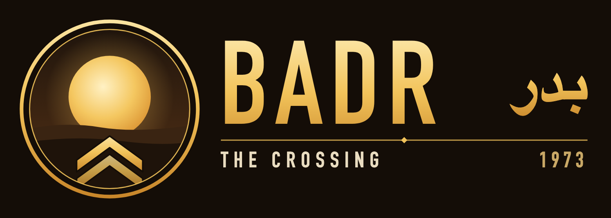

Support
Found a bug, have trouble joining a match, or want to report a player? Email ahmed@devlabtechnologies.com with your device, the game version (shown in Settings) and what happened. We reply in English or Arabic.
Common questions
Voice chat doesn't work. Allow microphone access for the game in your device settings, then turn voice on in the game's Settings.
I can't see games on my Wi-Fi. Allow local network access for the game in your device settings.
How do I switch language? Open Settings on the home screen and pick English or العربية.